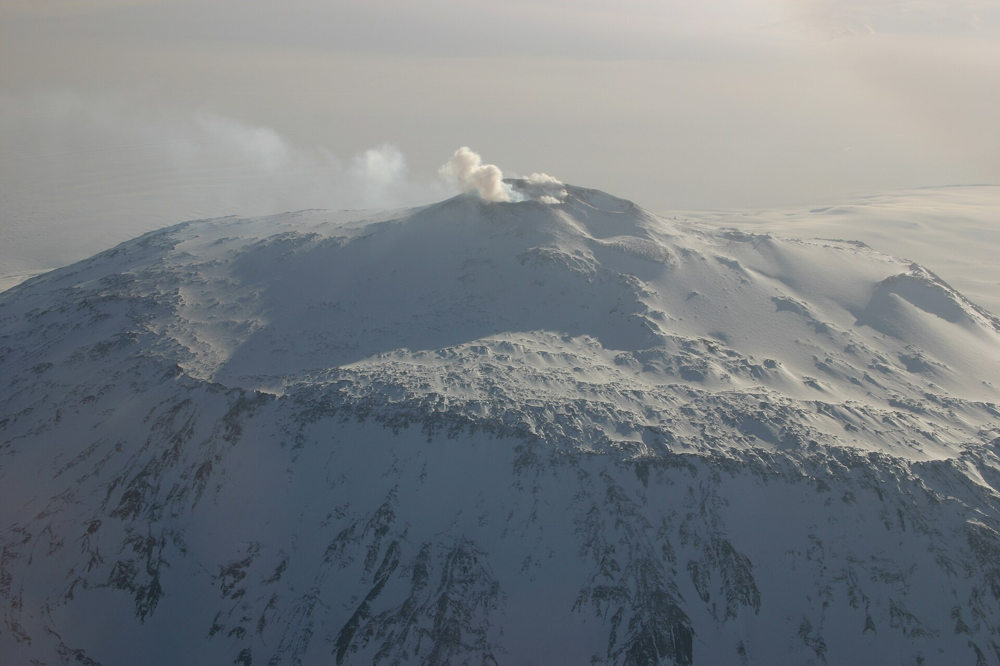
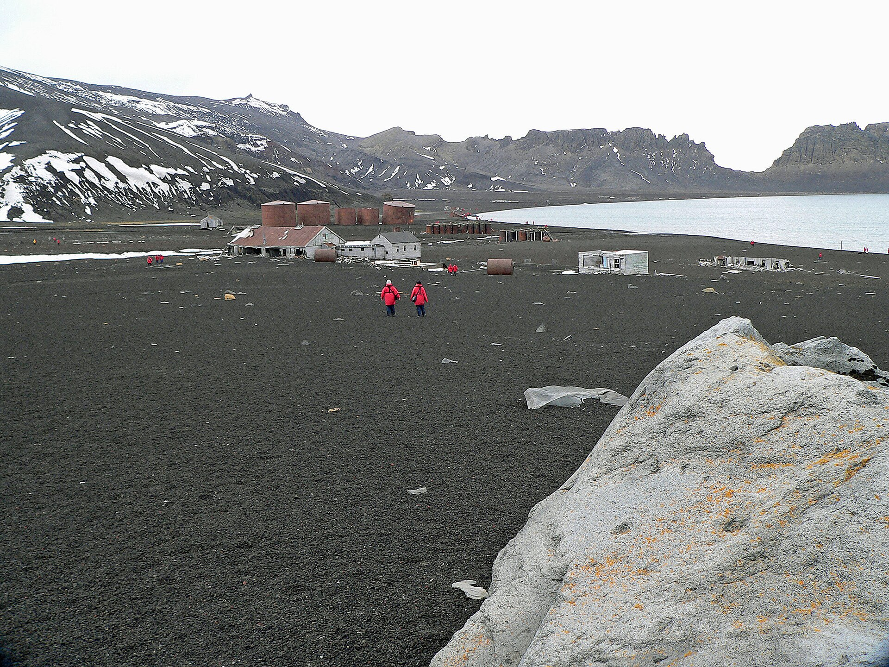

Überblick
Wahrzeichen in Antarktika unterscheiden sich grundlegend von denen besiedelter Kontinente. Es gibt keine historischen Hauptstädte und keine zivile Dauerbevölkerung. Was ikonisch wird, sind Forschungsstationen, Vulkane und markante Küstenformen – Orte der Wissenschaft, Logistik und Exploration im Regime des Antarktis-Vertrags. In der physischen Geografie ist Antarktika der eisbedeckte Kontinent um den Südpol; Menschen sind saisonal oder ganzjährig an Stationen präsent, nicht als Siedlergesellschaft.
Vier Beispiele strukturieren diesen Artikel: die Amundsen-Scott-Südpolstation am geographischen Südpol, die McMurdo-Station als größter US-amerikanischer Logistik- und Forschungsknoten auf der Ross-Insel, der aktive Vulkan Mount Erebus sowie Deception Island in den Südlichen Shetlandinseln – eine geflutete Caldera mit historischer Walfang- und Forschungsnutzung. Die Auswahl folgt bekannter Orientierungsmarken der „weißen Landkarte“, nicht einer touristischen Rangliste. Tourismus existiert, bleibt aber reguliert und auf Küsten und zugängliche Buchten konzentriert.
Wahrzeichen Antarktikas erzählen vor allem von Messung, Versorgung und Risiko: Kälte, Wind, Meereis und Isolation. Nationale Flaggen an Stationen markieren Forschungspräsenz, keine Souveränität im üblichen Sinn; Gebietsansprüche sind durch den Vertrag eingefroren. Der Artikel bleibt bewusst kürzer als die Wahrzeichen-Texte der besiedelten Kontinente und vermeidet erfundene Personal- oder Eismächtigkeitszahlen. Andere Stationen – etwa Wostok, Concordia, Neumayer oder Esperanza – wären ebenfalls erwähnenswert; hier stehen vier besonders bekannte Orientierungspunkte im Vordergrund. Gemeinsam zeigen sie: Antarktische „Wahrzeichen“ sind Infrastruktur und Landschaft unter Extrembedingungen, eingebettet in internationales Vertragsrecht. Karten und Medienbilder, die nur den „weißen Kontinent“ zeigen, unterschlagen diese Knotenpunkte der menschlichen Geografie Antarktikas.
Die Wahrzeichen
Amundsen-Scott-Südpolstation
Die Amundsen-Scott-Südpolstation der USA liegt am geographischen Südpol auf dem antarktischen Inlandeis. Benannt nach Roald Amundsen und Robert Falcon Scott – den Expeditionsleitern der ersten dokumentierten Erreichungen des Pols 1911/1912 –, dient sie ganzjährig der Forschung: Astrophysik, Atmosphären- und Klimamessung, Glaziologie und weitere Disziplinen. Die Station driftet mit dem Eis langsam; Gebäude und Markierungen müssen dem Fließen und der Schneeakkumulation angepasst werden.
Frühere Stationsgenerationen wurden begraben oder ersetzt; die heutige Anlage (eingeweiht in den 2000er Jahren) ist für extreme Kälte und lange Polarnacht ausgelegt. Versorgung erfolgt vor allem über Flugzeuge von McMurdo aus, abhängig von Wetterfenstern. Als Wahrzeichen steht Amundsen-Scott für den „Punkt Südpol“ selbst: geometrischer Ort, Expeditionsgedächtnis und Hightech-Messkampagne zugleich. Besuch außerhalb wissenschaftlicher Programme ist stark eingeschränkt; der Ort ist kein klassisches Touristenziel. Zeremonielle Polmarkierungen und Flaggenmasten gehören zum Bildrepertoire, sagen aber wenig über die alltägliche Messarbeit in Laboren und Observatorien aus. Die Station verkörpert die Verlagerung vom Wettlauf zum Pol hin zur Dauerbeobachtung des Klimasystems.
McMurdo-Station

McMurdo auf der Ross-Insel ist die größte US-Station Antarktikas und der zentrale Logistikknoten vieler Programme. Im Sommer können hier zeitweise über tausend Personen arbeiten; im Winter bleibt eine deutlich kleinere Überwinterungsmannschaft. Hafen (soweit Eis es zulässt), Flugfelder und Labore verbinden Feldkampagnen im Rossmeer-Sektor mit der Außenwelt. Die nahe gelegene neuseeländische Station Scott Base unterstreicht die internationale Nachbarschaft auf der Insel.
McMurdo liegt in relativ zugänglicher Küstenlage verglichen mit dem Hochplateau, bleibt aber extremen Stürmen und Meereisdynamik ausgesetzt. Historisch knüpft der Standort an frühe Expeditionsbasen der „heroischen“ Phase an. Heute prägen Containerbauten, Kraftwerke und strenge Umweltauflagen das Bild. Als Wahrzeichen steht McMurdo für die industrielle Seite polarer Wissenschaft: ohne diese Basis wären viele Inlandskampagnen – einschließlich Südpol – logistisch kaum möglich. Kritik an Umweltfußabdruck und expandierender Infrastruktur begleitet die Station seit Jahrzehnten und gehört zur ehrlichen geografischen Beschreibung. Von McMurdo aus starten Traversen und Flüge ins Innere; die Station ist damit weniger „Romantik des Eis“ als Umschlagplatz. Wer Antarktika geografisch verstehen will, muss solche Knoten mitdenken – analog zu Häfen in anderen Kontinenten, nur ohne zivile Stadt.
Mount Erebus

Mount Erebus auf der Ross-Insel gilt als südlichster aktiver Vulkan der Erde. Er trägt einen langlebigen Lavasee in seinem Krater – ein seltenes Phänomen, das Vulkanologie und Gasforschung anzieht. Die Höhe liegt in der Größenordnung von rund 3.700 Metern. Benannt wurde er während der Ross-Expedition nach einem der Schiffe; die Inselgruppe ist vulkanisch und Teil eines größeren tektonischen Settings am Rand Antarktikas.
Erebus ist zugleich Wahrzeichen und Risiko: Eruptionen und Gaswolken, schwieriges Gelände und die Nähe zu Flugrouten und Stationen verlangen Monitoring. Der Absturz von Air-New-Zealand-Flug 901 am Erebus 1979 ist Teil der neueren Erinnerungsgeschichte der Region. Für die geografische Lesart verkörpert der Berg, dass Antarktika nicht nur Eis ist: Magmatismus durchbricht den Schild, und eisfreie Hänge zeigen Gestein und Fumarolen. Forschungscamps arbeiten saisonal unter strengen Sicherheitsregeln. Zusammen mit den Nachbarvulkanen der Ross-Insel erinnert Erebus daran, dass der Kontinentrand tektonisch lebendig ist. Als Silhouette über dem Eis ist er eines der wenigen „Bergwahrzeichen“, die international mit Antarktika assoziiert werden.
Deception Island

Deception Island gehört zu den Südlichen Shetlandinseln nördlich der Antarktischen Halbinsel. Die Insel ist der Rand einer aktiven vulkanischen Caldera; das Meer flutete den Kessel und schuf einen ringförmigen Naturhafen (Port Foster), erreichbar durch die enge Öffnung Neptunes Bellows. Historisch nutzten Walfänger die geschützte Bucht; Reste von Stationen und Tanks erinnern an diese Phase. Vulkanausbrüche im 20. Jahrhundert zerstörten oder beschädigten wissenschaftliche Anlagen und zwangen zur Aufgabe.
Heute dient die Insel saisonaler Forschung und reguliertem Tourismus (u. a. Hot Springs an manchen Stränden, Pinguinkolonien). Die hufeisenförmige Silhouette und der „versteckte“ Hafen machen sie zu einem der fotografisch bekanntesten Küstenmotive der Subantarktis/Antarktis-Übergangszone. Geografisch zeigt Deception Island vulkanische Dynamik, Meeresverbindung und die Überlagerung von Walfang-, Forschungs- und Tourismusgeschichte. Besuch unterliegt den Regeln des Antarktis-Vertragsystems und von Betreiberverbänden; Landungsstellen und Nestabstände sind zu respektieren. Im Vergleich zu den Inlandstationen liegt Deception näher an typischen Kreuzfahrtrouten der Halbinselregion und prägt so das touristische Bild „Antarktis“ stärker als der Südpol selbst. Vulkanische Unruhe bleibt ein latentes Risiko für Mensch und Infrastruktur.
Quellen
- NSF – Amundsen-Scott South Pole Station: https://www.nsf.gov/od/opp/ail/amundson-scott-south-pole-station
- NSF – McMurdo Station: https://www.nsf.gov/od/opp/ail/mcmurdo-station
- Encyclopaedia Britannica – „Mount Erebus“: https://www.britannica.com/place/Mount-Erebus
- Encyclopaedia Britannica – „Deception Island“: https://www.britannica.com/place/Deception-Island
- Encyclopaedia Britannica – „Antarctica“: https://www.britannica.com/place/Antarctica
- Secretariat of the Antarctic Treaty – Overview: https://www.ats.aq/
- British Antarctic Survey – Antarctica overview: https://www.bas.ac.uk/about/antarctica/
- Wikipedia – „McMurdo Station“ (Orientierung, mit Vorsicht): https://en.wikipedia.org/wiki/McMurdo_Station
- Wikipedia – „Mount Erebus“: https://en.wikipedia.org/wiki/Mount_Erebus
- UNESCO / ATS Kontext – Antarctic protection regime (Hintergrund): https://www.ats.aq/e/antarctictreaty.html